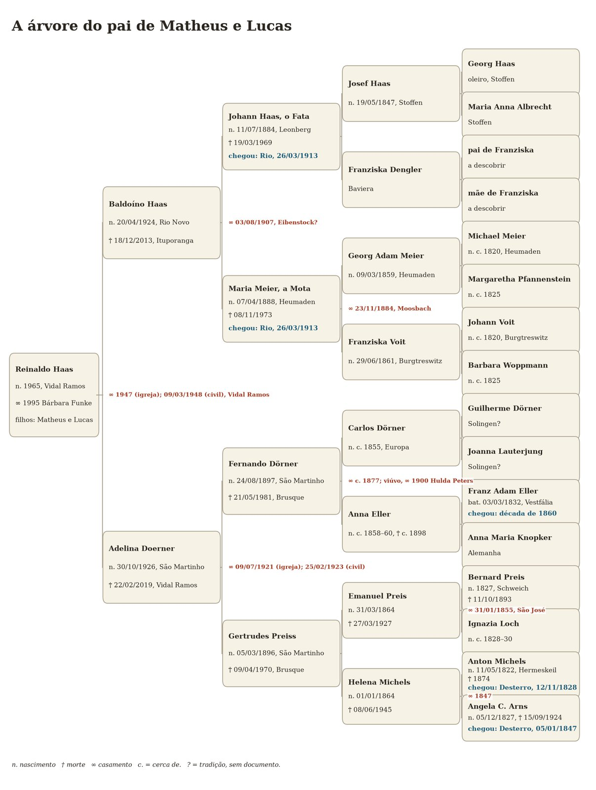
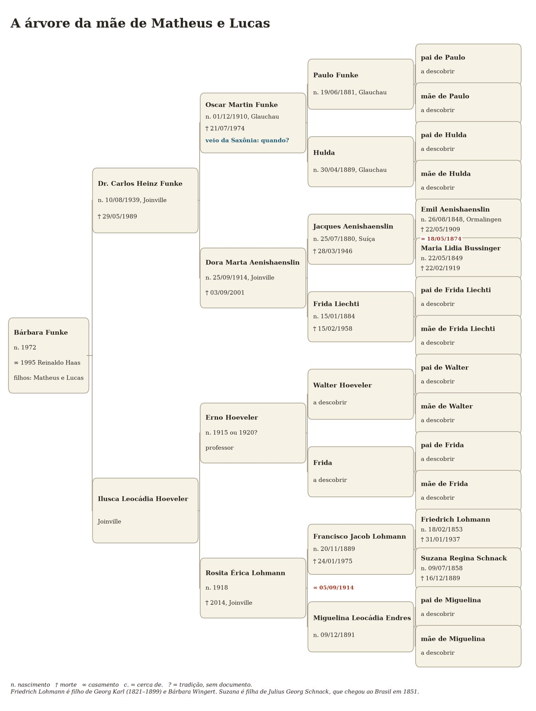

As Duas Árvores
Estas são as árvores de vocês, até onde sei hoje, com as datas de nascimento, de morte, de casamento e de chegada ao Brasil. As caixas com “a descobrir” não são descuido: são as perguntas que deixo para vocês. Pessoas vivas aparecem só com o ano, ou sem data.

